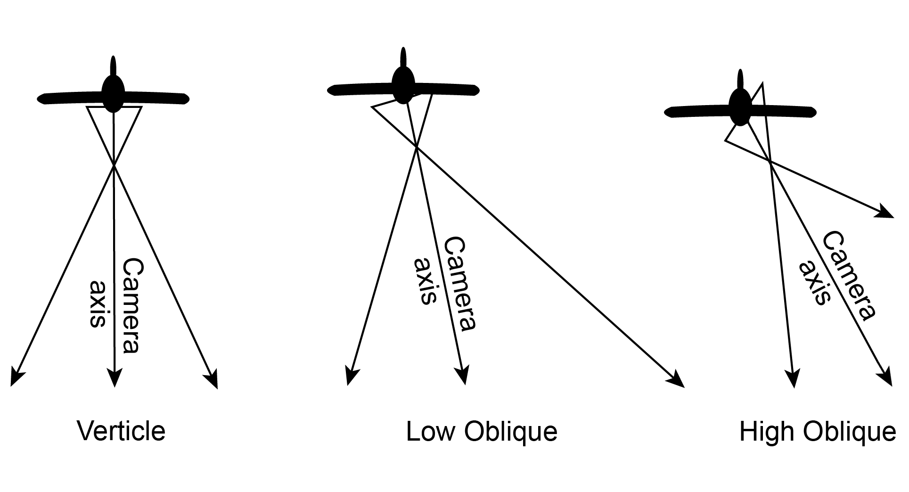
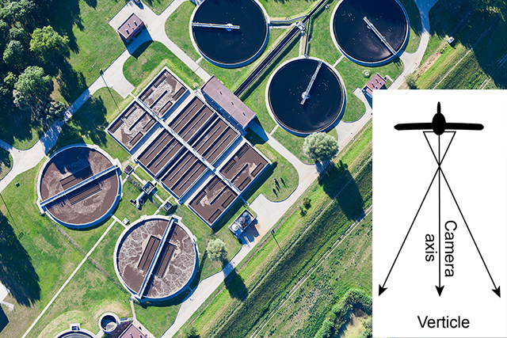
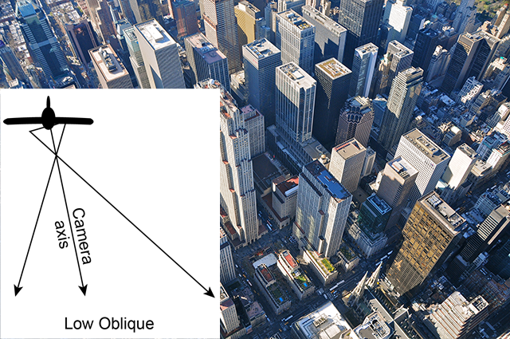
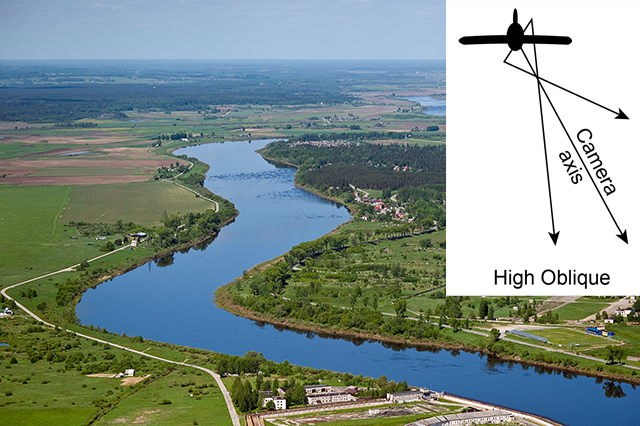

Identifying landforms and features on aerial photographs
Photographs taken from the air are called aerial photographs. The type of aerial photograph produced depends on the angle of the camera in relation to the ground.


Vertical aerial photographs show a bird’s eye view of a landscape and we see the features from above (a plan view).
In oblique aerial photographs, the camera lens is tilted so we see a side view of the landscape. If the horizon cannot be seen, it is called a low angle oblique aerial photograph.
When the horizon can be seen, it is called a high angle oblique aerial photograph.